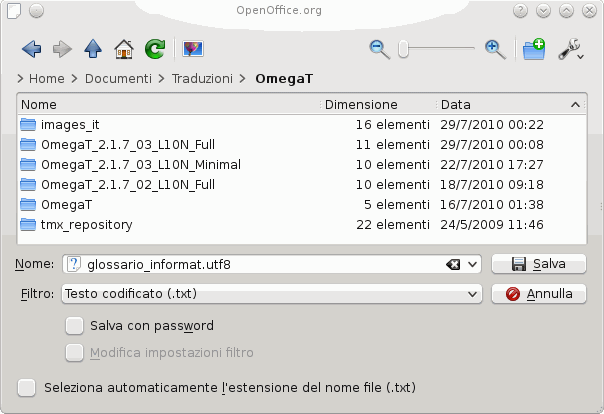
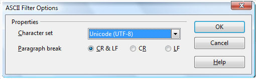

Glossari
I glossari sono file da usare in OmegaT creati e aggiornati manualmente.
Se un progetto OmegaT contiene uno o più glossari, tutti i termini presenti nel glossario trovati anche nel segmenti attivo saranno visualizzati automaticamente all'interno del visualizzatore Glossario.
Uso
Per utilizzare un glossario esistente, sarà sufficiente inserirlo nella cartella /glossary dopo aver creato il progetto. OmegaT, quando apre un progetto, rileva automaticamente i file di glossario presenti in questa cartella. I termini del segmento attivo che OmegaT reperisce all'interno del/dei file di glossario vengono visualizzati all'interno del pannello “Glossario” della schermata principale:

La parola prima del segno = è il termine di partenza, mentre la parola (o le parole) dopo il segno rappresenta la sua traduzione. Alla voce di glossario può essere aggiunto un commento (si veda "verbo transitivo" per il secondo elemento). La funzione di glossario è in grado di rilevare solo le corrispondenze esatte della voce contenuta nel glossario (vale a dire, non rileva le forme flesse, ecc.). Nel corso del processo di traduzione, al/ai file di glossario si possono inserire manualmente nuovi termini (per esempio servendosi di un editor di testo), ma le nuove voci di glossario saranno disponibili solo al successivo caricamento del progetto.
Formato dei file
I file di glossario sono dei semplici file di solo testo composti da elenchi su tre colonne, delimitate da tabulatori, con il termine sorgente e quello di destinazione inseriti, rispettivamente, nella prima e nella seconda colonna. La terza colonna viene utilizzata per l'inserimento di ulteriori informazioni. I file di glossario possono prevedere la codifica predefinita dal sistema (indicata dall'estensione .tab) o in UTF-8 (estensione .utf8). Si preferisce la codifica Unicode (UTF8) per ovvie ragioni.
Come creare glossari
Il metodo da usare è collaudato e semplice, se seguito in modo accurato. È necessario avere installato OpenOffice.org Writer - se non lo si ha si deve scaricare e installare OpenOffice.org. Avviare OpenOffice.org e aprire un documento di testo, oppure avviare "OpenOffice.org Writer".
Scrivere i termini del glossario nel documento vuoto, come segue: termine della lingua di partenza, tabulazione, termine della lingua di arrivo, tabulazione eventuale commento o spiegazione dell'elemento, poi tasto Invio. La "tabulazione" è il tasto tab situato nel lato sinistro della tastiera. Non inserire la seconda tabulazione se non si desidera aggiungere un commento. "Termine" può indicare una singola parola o un'intera frase. Nella seconda riga scrivere il secondo termine e la traduzione corrispondente.
Dopo aver finito di aggiungere termini, si avranno due "colonne", una sulla sinistra per i termini della lingua di partenza; una sulla destra per i termini della lingua di arrivo; una possibile terza colonna di commenti o spiegazioni, I caratteri di tabulazione (→ nell'esempio indicato sotto) e Invio (¶ ) possono essere visualizzati facendo clic sull'icona ¶ nella barra dei comandi standard di Writer. Ecco alcune righe di un possibile glossario Inglese - Tedesco:
word →Wort→das (-/e/s, Wörter/-e)¶
small house→Häuschen→das,
(pl Häuschen)¶
dog →Hund→m, f Hündin ¶
horse→Pferd→n, m Hengst f Stute n Fohlen¶
NON usare la funzione "colonne" di OpenOffice.org per creare le colonne: separare le coppie di termini linguistici di partenza e arrivo con una singola tabulazione.
Una volta terminato con le voci, scegliere File > Salva come. Nel campo "Posizione file" digitare il nome per il glossario seguito dall'estensione ".utf8" (ad es., "MioGlossario.utf8"). Come "Filtro", scegliere "Testo codificato (.txt.)". Togliere il segno di spunta alla casella "Seleziona automaticamente l'estensione del nome file" e attivare "Modifica impostazioni filtro":

Confermare con OK. Apparirà una finestra di dialogo con due opzioni: "Mantieni il formato corrente" e "Salva in formato ODF". Selezionare "Mantieni il formato corrente" per salvare nel formato di file di testo codificato. Nella finestra di dialogo delle opzioni del filtro ASCII (si veda sotto), scegliere "Unicode (UTF-8)" come set di caratteri:

Confermare con OK.
Copiare o spostare questo file all'interno della cartella \glossary del progetto OmegaT creato. Se il progetto esiste già, ricaricarlo dopo aver copiato il file di glossario. È possibile apportare modifiche a un glossario durante il suo uso all'interno di un progetto. Le modifiche saranno individuate un secondo dopo circa, e caricate in modo trasparente e in background, affinché non sia necessario ricaricare il progetto dopo aver salvato il nuovo file di glossario.
Quando viene aperto un segmento che contiene un termine del testo di partenza, il pannello del glossario mostrerà le voci corrispondenti a quegli elementi presenti nel glossario (o nei glossari - è possibile averne più di uno, anch'essi memorizzabili in sottocartelle di glossary).
Uso di Trados Multiterm
I glossari creati con la funzione di esportazione testo di Trados MultiTerm potranno essere utilizzati, per esempio, da OmegaT senza apportarvi alcuna modifica, sempre che agli stessi venga applicata l'estensione .tab e che i campi dei termini sorgente e di destinazione siano, rispettivamente, il primo e il secondo. Se si esporta utilizzando l'opzione di sistema "Esportazione delimitata da tab", si dovranno eliminare le prime 5 colonne (Seq. Num, Data creazione, ecc.) che si trovano prima dei due elementi necessari.
Problemi comuni dei glossari
- Problema: non è visualizzato alcun termine di glossario.
- Cause possibili:
- non sono presenti file di glossario nella cartella "glossary"
- il file di glossario è vuoto
- gli elementi non sono separati da un carattere TAB
- il file di glossario non possiede l'estensione corretta (.tab o .utf8)
- Non esiste una PRECISA corrispondenza tra la voce di glossario e il testo di partenza nel documento - ad esempio, il termine è al plurale
- il file di glossario non possiede la corretta codifica
- non esistono termini nel segmento attivo che corrispondono ai termini presenti nel glossario
- uno o più problemi citati sopra sono stati risolti ma il progetto non è stato ricaricato.
- Problema: nel pannello del glossario alcuni caratteri non vengono visualizzati correttamente (ma gli stessi caratteri sono visualizzati correttamente nella pannello di modifica).
- Cause possibili:
- l'estensione e il file di codifica non coincidono.